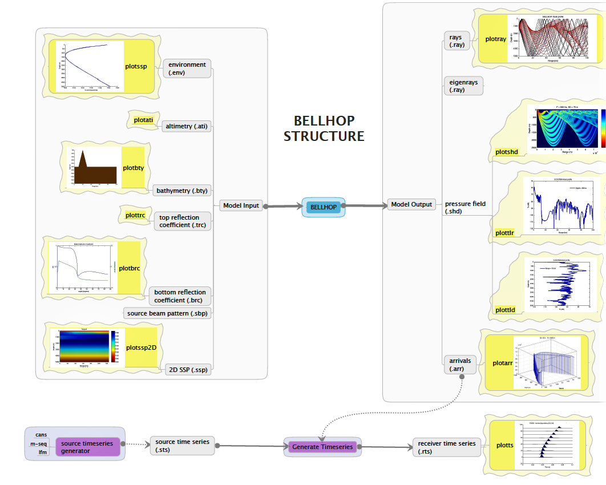
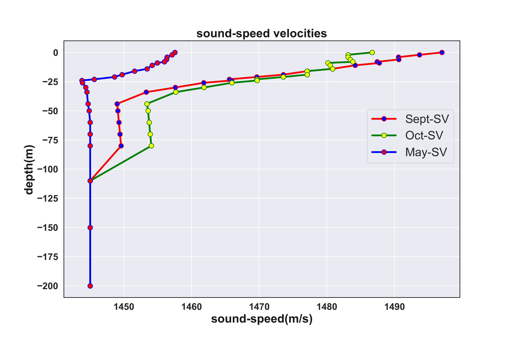
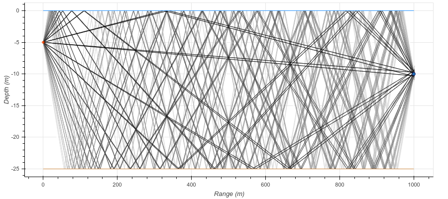
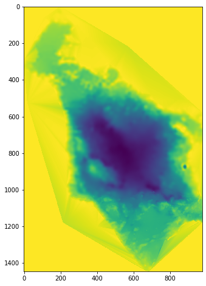
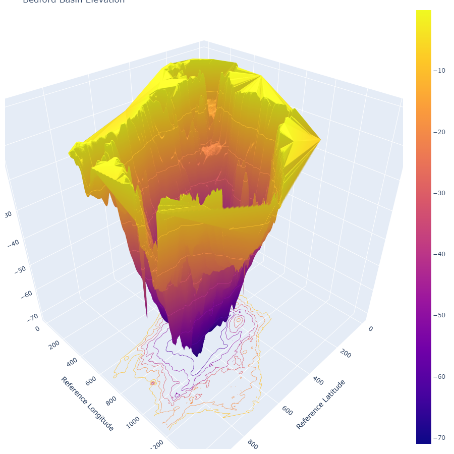

Bellhop Acoustic Toolbox
 Bellhop Munk Profile
Bellhop Munk Profile
Bellhop - Ocean simulation modeling
What is BELLHOP ?
- BELLHOP is a beam tracing model for predicting acoustic pressure fields in ocean environments.
- BELLHOP can produce a variety of useful outputs including transmission loss, eigenrays, arrivals, and received time-series. It also allows for range-dependence in the top and bottom boundaries (altimetry and bathymetry), as well as in the sound speed profile (SSP).
- BELLHOP is implemented in Fortran, Matlab, and Python and used on multiple platforms (Mac, Windows, and Linux).

Figure 1: BELLHOP structure
WHY BELLHOP?
- Underwater communication channel is a relatively difficult transmission medium due to the variability of link quality depending on location and applications.
- Before deploying any kind of vehicles underwater, one should predict the underwater communication system performance which is based on the sound frequency transmitted underwater.
Why do you need to analyze the uw-comms performance?
-
To analyze impact of channel characteristics on underwater communications,
-
prior to deploying robots, predict communication system performance,
-
provide guidance on best physical layout to deploy underwater vehicles,
-
provide estimates on parameters for link budget calculation,
-
Because it will provide you a rough idea about how far you can communicate within network which is also known as an operation range for communication.
-
BELLHOP reads these files depending on options selected within the main environmental file.
-
There are various options for which you can run bellhop are:
- ray tracing option,
- eigenray option,
- transmission loss option,
- an arrivals calculation option.
Installation
- Please download newer version from Bellhop, Bellhop Mirror#1 or Bellhop Mirror#2.
- Unzip the downloaded file to local machine and go to that folder.
- If you’re using the Unix base system then open command prompt and go to the same folder where you extracted your zip.
cd at/at
make all
sudo make install
- If you’re using bellhop on Windows 10 machine then you also need to download the Win10 Binary executable files from here. Please also extract that to the folder at.
Detailed Installation Instructions based on OS
Sound Speed Profile of Bedford Basin (taken on 13-10-17)

Figure 2: Sound Speed Profile
How to Plot SSP’s using ARLPY ?
# SSP Plotting using ARLPY
import arlpy.uwapm as pm
import arlpy.plot as plt
import numpy as np
env = pm.create_env2d()
ssp = [
[ 0, 1540], # 1540 m/s at the surface
[10, 1530], # 1530 m/s at 10 m depth
[20, 1532], # 1532 m/s at 20 m depth
[25, 1533], # 1533 m/s at 25 m depth
[30, 1535] # 1535 m/s at the seabed
]
env = pm.create_env2d(soundspeed=ssp)
pm.plot_ssp(env, width=500)
Plotting an Environment
# Plotting an Environment using ARLPY
pm.plot_env(env, width=900)
Eigenrays
- Eigenray plots show just the rays that connect the source to a receiver.
# Eigenrays using ARLPY
import arlpy.uwapm as pm
import arlpy.plot as plt
import numpy as np
env = pm.create_env2d()
rays = pm.compute_eigenrays(env)
pm.plot_rays(rays, env=env, width=900)

Figure 3: Eigenrays using ARLPY
compute the arrival structure at the receiver
arrivals = pm.compute_arrivals(env)
pm.plot_arrivals(arrivals, width=900)
arrivals[arrivals.arrival_number < 10][['time_of_arrival', 'angle_of_arrival', 'surface_bounces', 'bottom_bounces']]
| time_of_arrival | angle_of_arrival | surface_bounces | bottom_bounces | |
|---|---|---|---|---|
| 1 | 0.721796 | 22.538254 | 9 | 8 |
| 2 | 0.716791 | -21.553932 | 8 | 8 |
| 3 | 0.709687 | 20.052078 | 8 | 7 |
| 4 | 0.705226 | -19.034414 | 7 | 7 |
| 5 | 0.698960 | 17.484421 | 7 | 6 |
| 6 | 0.695070 | -16.436060 | 6 | 6 |
| 7 | 0.689678 | 14.842224 | 6 | 5 |
| 8 | 0.686383 | -13.766296 | 5 | 5 |
| 9 | 0.681901 | 12.133879 | 5 | 4 |
| 10 | 0.679223 | -11.034208 | 4 | 4 |
# convert to a impulse response time series
ir = pm.arrivals_to_impulse_response(arrivals, fs=96000)
plt.plot(np.abs(ir), fs=96000, width=900)
Bathymetry
Let's first start off by defining our bathymetry, a steep up-slope for the first 300 m, and then a gentle downslope:
# add/change bathy to env
bathy = [
[0, 30], # 30 m water depth at the transmitter
[300, 20], # 20 m water depth 300 m away
[1000, 25] # 25 m water depth at 1 km
]
# add/change SSP to env
ssp = [
[ 0, 1540], # 1540 m/s at the surface
[10, 1530], # 1530 m/s at 10 m depth
[20, 1532], # 1532 m/s at 20 m depth
[25, 1533], # 1533 m/s at 25 m depth
[30, 1535] # 1535 m/s at the seabed
]
# Appending ssp and bathy to existing env file
env = pm.create_env2d(
depth=bathy,
soundspeed=ssp,
bottom_soundspeed=1450,
bottom_density=1200,
bottom_absorption=1.0,
tx_depth=15
)
pm.print_env(env)
name : arlpy
bottom_absorption : 1.0
bottom_density : 1200
bottom_roughness : 0
bottom_soundspeed : 1450
depth : [[ 0. 30.]
[ 300. 20.]
[1000. 25.]]
depth_interp : linear
frequency : 25000
max_angle : 80
min_angle : -80
nbeams : 0
rx_depth : 10
rx_range : 1000
soundspeed : [[ 0. 1540.]
[ 10. 1530.]
[ 20. 1532.]
[ 25. 1533.]
[ 30. 1535.]]
soundspeed_interp : spline
surface : None
surface_interp : linear
tx_depth : 15
tx_directionality : None
type : 2D
pm.plot_env(env, width=900)
Looks more interesting! Let's see what the eigenrays look like, and also the arrival structure:
rays = pm.compute_eigenrays(env)
pm.plot_rays(rays, env=env, width=900)
We could also ignore the receiver, and plot rays launched at various angles:
rays = pm.compute_rays(env)
pm.plot_rays(rays, env=env, width=900)
import numpy as np
from scipy.interpolate import griddata
import scipy.ndimage as ndimage
from scipy.ndimage import gaussian_filter
import scipy
# from scipy.misc import imsave
from matplotlib import cm
import matplotlib.pyplot as plt
from mpl_toolkits.mplot3d import Axes3D
from stl import mesh, Mode
import matplotlib.tri as mtri
from mpl_toolkits.mplot3d.axes3d import get_test_data
from pandas import read_csv
data = read_csv('bathy.txt', sep='\s+', header=None, names=['x', 'y', 'depth'])
x = np.arange(data.x.min(), data.x.max()+1)
y = np.arange(data.y.min(), data.y.max()+1)
X, Y = np.meshgrid(x, y)
Z = griddata(data[['x','y']].values, -data['depth'].values, (X, Y), method='linear')
# make the grid square
Z[np.isnan(Z)] = 0
fig = plt.figure(figsize=(14, 8))
ax = fig.add_subplot(111)
plt.imshow(Z)
plt.show()

Figure 4: Bedford Basin Bathy 2D

Figure 5: Bedford Basin Bathy 3D
or place lots of receivers in a grid to visualize the acoustic pressure field (or equivalently transmission loss). We can modify the environment (env) without having to recreate it, as it is simply a Python dictionary object:
env['rx_range'] = np.linspace(0, 1000, 1001)
env['rx_depth'] = np.linspace(0, 30, 301)
Transmission Loss
- RUN TYPE BELLHOP
OPTION(1:1): 'R' generates a ray file
'E' generates an eigenray file
'A' generates an amplitude-delay file (ascii)
'a' generate an amplitude-delay file (binary)
'C' Coherent TL calculation
'I' Incoherent TL calculation
'S' Semicoherent TL calculation
(Lloyd mirror source pattern)
- The number of beams, NBeams, should normally be set to 0, allowing BELLHOP to automatically select the appropriate value. The number
needed increases with frequency and the maximum range to a receiver.
- The pressure field, p, is then calculated for the specified grid of receivers, with a scaling such that $20\ log10(|p|)$ is the transmission loss in dB.
tloss = pm.compute_transmission_loss(env)
pm.plot_transmission_loss(tloss, env=env, clim=[-60,-30], width=900)
We see a complicated interference pattern, but an interesting focusing at 800 m at a 15 m depth. The detailed interference pattern is of course sensitive to small changes in the environment. A less sensitive, but more averaged out, transmission loss estimate can be obtained using the incoherent mode:
tloss = pm.compute_transmission_loss(env, mode='incoherent')
pm.plot_transmission_loss(tloss, env=env, clim=[-60,-30], width=900)
Source directionality
Now, let's use a directional transmitter instead of an omni-directional one:
beampattern = np.array([
[-180, 10], [-170, -10], [-160, 0], [-150, -20], [-140, -10], [-130, -30],
[-120, -20], [-110, -40], [-100, -30], [-90 , -50], [-80 , -30], [-70 , -40],
[-60 , -20], [-50 , -30], [-40 , -10], [-30 , -20], [-20 , 0], [-10 , -10],
[ 0 , 10], [ 10 , -10], [ 20 , 0], [ 30 , -20], [ 40 , -10], [ 50 , -30],
[ 60 , -20], [ 70 , -40], [ 80 , -30], [ 90 , -50], [100 , -30], [110 , -40],
[120 , -20], [130 , -30], [140 , -10], [150 , -20], [160 , 0], [170 , -10],
[180 , 10]
])
env['tx_directionality'] = beampattern
tloss = pm.compute_transmission_loss(env)
pm.plot_transmission_loss(tloss, env=env, clim=[-60,-30], width=900)
Now you can see the directionality and the sidelobe structure of the transmitter.
tloss = pm.compute_transmission_loss(env, mode='incoherent')
pm.plot_transmission_loss(tloss, env=env, clim=[-60,-30], width=900)
Undulating water surface
Finally, let's try adding a long wavelength swell on the water surface:
surface = np.array([[r, 0.5+0.5*np.sin(2*np.pi*0.005*r)] for r in np.linspace(0,1000,1001)])
env['surface'] = surface
tloss = pm.compute_transmission_loss(env)
pm.plot_transmission_loss(tloss, env=env, clim=[-60,-30], width=900)
tloss = pm.compute_transmission_loss(env, mode='incoherent')
pm.plot_transmission_loss(tloss, env=env, clim=[-60,-30], width=900)
Now, if I placed a receiver at 800 m, and 15 m depth, roughly where we see some focusing, what would the eigenrays and arrival structure look like?
env['rx_range'] = 800
env['rx_depth'] = 15
rays = pm.compute_eigenrays(env)
pm.plot_rays(rays, env=env, width=900)
arrivals = pm.compute_arrivals(env)
pm.plot_arrivals(arrivals, dB=True, width=900)
Note: We plotted the amplitudes in dB, as the later arrivals are much weaker than the first one, and better visualized in a logarithmic scale.
Bellhop3D
-
BELLHOP3D is a beam tracing model for predicting acoustic pressure fields in ocean environments.
-
It is an extension to 3D environments of the popular BELLHOP model and includes (optionally) horizontal refraction in the lat-long plane.
-
3D pressure fields can be calculated by a 2D model simply by running it on a series of radials (bearing lines) from the source.(This is the so-called Nx2D or 2.5D approach.)
-
BELLHOP3D includes 4 different types of beams:
- Cerveny Beams,
- Geometric Hat-Beams,
- Geometric Gaussian-Beams,
- Geometric Hat-Beams in Cartesian Coordinates
-
You can also download the sample notebook from here.
-
All code and setup files are also available on GitHub.
References
Jay Patel
PhD in Electrical & Computer Engineering
My research interests include electronics & communications, distributed underwater robotics, mobile computing and programmable matter.